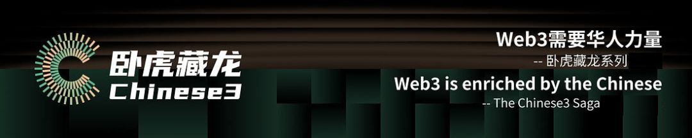

在2024年4月SeeDAO正式推出“Web3需要华人力量”系列(提案：SIP-163: SeeDAO Chinese3 |卧虎藏龙 Web3需要华人力量提案)，旨在挖掘华人在Web3领域的创新潜力，探索和发掘加密行业中的隐藏英才。该项目简称为Chinese3，目的是凝聚社区力量，提升社群活跃度，并增强行业内的影响力。
经过五个多月从0到1的运营，Chinese3已经完成两个Seasons的执行，招募了8个主题的负责人及近40位项目成员，并形成了以Sprint专题形式的操作模板。同时，吸引了30多个华语创业团队或项目方报名卧虎藏龙项目。

项目背景
2.内容创造：定期发布Newsletter，向行业持续输出高质量的Web3华人故事和创业项目。
3.社区互动：在Twitter Space或直播平台举办AMA活动，邀请优秀项目创始人及行业意见领袖参与，增加媒体曝光。
4.内容再传播：基于AMA内容或访谈，制作Podcast播客，实现优质内容的二次传播。
5.深度报道：针对每个选题在社区内招募研究人员，输出有深度的文章。
6.媒体联动：通过SeeDAO及Chinese3媒体子账号、小宇宙播客及SubStack专辑来沉淀优质内容，并与SeeDAO现有媒体矩阵及合作伙伴进行联动。
招募Sprint主理人
作为SeeDAO发起的项目，Chinese3｜卧虎藏龙设有总协调人。基于之前两季的选题Bitcoin、 DAO、NFT、Meme、 DePIN 及 AI等。卧虎藏龙第3季的选题将会结合行业的热点，聚焦RWA、 TON生态、公链、 EIP创作者、加密KOLs、Web3孵化器与加速器等。每个选题称为一个Sprint，执行周期约为3-4周。
现招募各个选题的主理人， 与 SeeDAO市政厅及社区深度合作，组建每个选题的执行小组。负责选题范围内的调研与外部合作，输出Newsletter、Twitter Space/ Podcast、深度长文及访谈等，基于选题通过不同的媒体与渠道进行矩阵推广。
通过有品质的内容创作和多社区联动的协作，巩固SeeDAO在加密行业的领先地位，为华人社区在Web3领域的发展与成长提供支持。
项目激励
每个Sprint 可获得 500U + 10万SCR积分
主理人及项目组除分配U和SCR外，还可获得Chinese3专项SBT;
积分累计后可以当选SeeDAO节点或发起提案；
主理人要求
了解Web3行业与加密社区；
认同SeeDAO的价值观与治理模式；
参与或发起过Web3项目，有执行力；
熟悉选题所在的细分赛道并有人脉资源。
报名方式
填写报名表：https://forms.gle/sLCzZXWL5o2RwL6D6
截止日期：2024年9月10日(星期二)
过往项目参考：
1.卧虎藏龙系列深度文章：
2.卧虎藏龙系列Newsletter:
https://substack.com/@chinese3
3.卧虎藏龙系列 Podcast:
https://www.xiaoyuzhoufm.com/podcast/66042de32d9eae5d0a6e7ab6
*最终结算由SeeDAO节点大会结项投票确定。